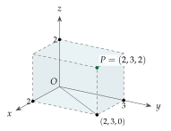
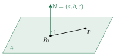
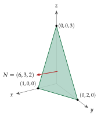
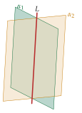
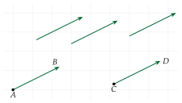
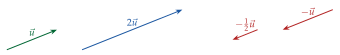
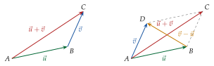

Todo lo hecho en el capítulo anterior se extiende al espacio agregando una tercera coordenada. Los segmentos, las rectas paramétricas y las distancias funcionan exactamente igual; la novedad está en que ahora hay rectas alabeadas y planos, y en que un plano, no una recta, es lo que queda descrito por una sola ecuación lineal.
Mantenemos la notación B−A, A+B y tA para las operaciones coordenada a coordenada con ternas de números.
Un sistema de coordenadas cartesianas del espacio está formado por tres rectas orientadas, los ejes x, y, z, perpendiculares dos a dos, que se cortan en su origen común O y tienen la misma unidad. Los ejes determinan tres planos coordenados: el plano xy (z=0), el plano yz (x=0) y el plano xz (y=0), que dividen al espacio en ocho octantes.
Mueva las coordenadas y gire los ejes para ver el punto desde todos los lados.
El sistema es derecho (o positivamente orientado) si, al curvar los dedos de la mano derecha desde el semieje positivo x hacia el semieje positivo y, el pulgar apunta en el sentido del semieje positivo z. Usaremos siempre sistemas derechos; la orientación será importante en el capítulo 12, al definir el producto vectorial.

Como en el plano, a cada punto P le corresponde una única terna (x,y,z): sus coordenadas son las de las proyecciones ortogonales de P sobre los tres ejes.
La distancia entre A=(a1,a2,a3) y B=(b1,b2,b3) es d(A,B)=(b1−a1)2+(b2−a2)2+(b3−a3)2.
Sea C=(b1,b2,a3).
El segmento AC está en el plano horizontal z=a3, y por la fórmula del plano AC2=(b1−a1)2+(b2−a2)2.
El segmento CB es vertical (paralelo al eje z), de longitud ∣b3−a3∣, y perpendicular al plano z=a3; por tanto △ACB es rectángulo en C, y por Pitágoras AB2=AC2+CB2.
Sean A=B puntos del espacio.
Para t∈[0,1], P(t)=A+t(B−A) es el punto de AB con AP=tAB. En particular, el punto medio es 2A+B.
(Transporte paralelo.) Si C∈/AB y D=C+(B−A), entonces ABDC es un paralelogramo.
Los segmentos AB y CD son paralelos (o están en una misma recta) si y solo si D−C=λ(B−A) para algún λ=0.
(i) Se proyecta sobre los planos coordenados (o se aplica Thales en el espacio con los planos x=a1, x=xP, x=b1, etc.), exactamente como en el Teorema 9.3.1. (ii) Las diagonales tienen el mismo punto medio 2B+C. (iii) Se traslada al origen como en el plano.
La recta que pasa por P0=(x0,y0,z0) con director U=(u1,u2,u3)=(0,0,0) es el conjunto de los puntos P(t)=P0+tU,es decir,⎩⎨⎧x=x0+tu1y=y0+tu2z=z0+tu3t∈R. Si u1,u2,u3=0, eliminando t se obtienen las ecuaciones simétricas u1x−x0=u2y−y0=u3z−z0.
Las ecuaciones simétricas son en realidad dos ecuaciones, por ejemplo u1x−x0=u2y−y0 y u2y−y0=u3z−z0. Cada una, por separado, describe un plano (el primero paralelo al eje z, el segundo paralelo al eje x), y la recta es su intersección. Si una de las componentes del director es cero, digamos u3=0, la recta está en el plano horizontal z=z0 y se escribe u1x−x0=u2y−y0, z=z0.
La recta por A=(1,2,−1) y B=(3,−1,4) tiene director B−A=(2,−3,5) y ecuaciones x=1+2t,y=2−3t,z=−1+5t;2x−1=−3y−2=5z+1. Corta al plano xy (z=0) cuando t=51, en el punto (57,57,0).
Sean L1 y L2 rectas con directores U y V.
L1∥L2 si y solo si V=λU para algún λ=0.
L1 y L2 son perpendiculares u ortogonales (forman ángulo recto, se corten o no) si y solo si u1v1+u2v2+u3v3=0.
(i) es el Teorema 10.1.3(iii). (ii) Trasladamos los directores al origen: el ángulo entre las rectas es el ángulo ∠UOV, que es recto si y solo si d(U,V)2=OU2+OV2. Con la fórmula de distancia, esto es −2(u1v1+u2v2+u3v3)=0, como en el plano.
Sean L1: A+tU y L2: C+sV.
Si U∥V: las rectas son coincidentes si C∈L1, y paralelas si C∈/L1.
Si U∦V: las rectas son secantes si el sistema A+tU=C+sV (tres ecuaciones, dos incógnitas) tiene solución, y alabeadas si no la tiene.
Sean L1: (1,0,2)+t(1,1,0) y L2: (0,1,0)+s(0,1,1). Los directores no son paralelos. Igualando: 1+t=0,t=1+s,2=s. La primera da t=−1, la tercera s=2, y la segunda exigiría −1=3: el sistema no tiene solución. Las rectas son alabeadas. Además, (1,1,0) y (0,1,1) dan 0+1+0=1=0, así que no son ortogonales.
Sea α un plano, P0=(x0,y0,z0) un punto de α y N=(a,b,c)=(0,0,0) el director de una recta perpendicular a α. Entonces P=(x,y,z)∈α⟺a(x−x0)+b(y−y0)+c(z−z0)=0, es decir, α tiene una ecuación de la forma ax+by+cz+d=0. Recíprocamente, toda ecuación de esta forma, con (a,b,c)=(0,0,0), representa un plano. El vector N=(a,b,c) es un normal del plano.
Sea n la recta perpendicular a α por P0, con director N.
Un punto P=P0 está en α si y solo si P0P⊥n: si P∈α, es porque n es perpendicular a todas las rectas de α por P0; y si P0P⊥n, la recta P0P está en el plano perpendicular a n por P0, que es α (Teorema 8.2.6).
Por el criterio de perpendicularidad, P0P⊥n equivale a a(x−x0)+b(y−y0)+c(z−z0)=0.
Recíprocamente, si a=0, el punto P0=(−ad,0,0) satisface la ecuación ax+by+cz+d=0, que se puede escribir a(x−x0)+by+cz=0; por la primera parte, es la ecuación del plano por P0 perpendicular a la recta de director (a,b,c).
Cambie los coeficientes de ax + by + cz = d. El vector rojo es normal al plano.

Halle el plano que pasa por A=(1,0,0), B=(0,2,0) y C=(0,0,3).
Buscamos (a,b,c) perpendicular a B−A=(−1,2,0) y a C−A=(−1,0,3): −a+2b=0,−a+3c=0. Tomando a=6, sale b=3 y c=2. El plano es 6(x−1)+3y+2z=0, es decir, 6x+3y+2z=6, o en forma segmentaria 1x+2y+3z=1. (En el capítulo 12 veremos que el producto vectorial da directamente un normal.)

Sean α1: a1x+b1y+c1z+d1=0 y α2: a2x+b2y+c2z+d2=0, con normales N1, N2, y sea L una recta de director U.
α1∥α2 si y solo si N2=λN1; son el mismo plano si además d2=λd1. En otro caso, se cortan en una recta.
α1⊥α2 si y solo si N1 y N2 son perpendiculares: a1a2+b1b2+c1c2=0.
L∥α1 (o está contenida en él) si y solo si U⊥N1; y L⊥α1 si y solo si U∥N1.
(i) Dos planos son paralelos si y solo si las rectas perpendiculares a ellos son paralelas (Teorema 8.2.6).
(ii) El ángulo diedro entre dos planos es igual al ángulo entre sus normales o a su suplemento: en el plano perpendicular a la arista, las normales son perpendiculares a los lados del ángulo rectilíneo.
(iii) L es paralela a α1 si y solo si es perpendicular a la normal; y es perpendicular a α1 si y solo si es paralela a ella.
Los planos x+y+z=3 y x−y+2z=1 no son paralelos ((1,1,1) y (1,−1,2) no son proporcionales). Para hallar la recta de corte, despejamos dos variables en función de la tercera: sumando, 2x+3z=4; restando, 2y−z=2. Con z=2t: x=2−3t, y=1+t, z=2t. La recta es (2,1,0)+t(−3,1,2). Comprobación: (−3,1,2) es perpendicular a ambas normales: −3+1+2=0 y −3−1+4=0.

La distancia del punto P1=(x1,y1,z1) al plano ax+by+cz+d=0 es a2+b2+c2∣ax1+by1+cz1+d∣.
La recta perpendicular al plano por P1 es P1+t(a,b,c); corta al plano cuando t=−a2+b2+c2ax1+by1+cz1+d, y la distancia es ∣t∣a2+b2+c2. Es la misma cuenta que en el Teorema 9.5.5.
La distancia de (1,1,1) al plano 6x+3y+2z=6 es 36+9+4∣6+3+2−6∣=75. La distancia entre los planos paralelos 6x+3y+2z=6 y 6x+3y+2z=20 es 714=2.
En física, para describir un desplazamiento, una velocidad o una fuerza no basta un número: hace falta saber cuánto, en qué dirección y en qué sentido. Los vectores son el objeto matemático que reúne esas tres informaciones. En este capítulo los definimos geométricamente, a partir de los segmentos dirigidos y del transporte paralelo, y vemos que las operaciones con pares y ternas de números que usamos en los capítulos anteriores son, precisamente, las operaciones con vectores.
Un segmento dirigido AB es un segmento en el que se distingue un punto inicial (el origen A) y un punto final (el extremo B). Si A=B, tiene:
una magnitud: la longitud AB;
una dirección: la de la recta AB (dos segmentos tienen la misma dirección si están en rectas paralelas);
un sentido: de A hacia B.
Si A=B hablamos del segmento dirigido nulo, que tiene magnitud cero y no tiene dirección ni sentido.
Para comparar sentidos usamos el transporte paralelo: dos segmentos dirigidos AB y CD con la misma dirección tienen el mismo sentido si, al trasladar AB al punto C, el punto D queda sobre el rayo CD′ donde D′=C+(B−A). En coordenadas, por el Teorema 9.3.6, D−C=λ(B−A) con λ>0.
Dos segmentos dirigidos AB y CD son equipolentes, y escribimos AB∼CD, si tienen la misma magnitud, la misma dirección y el mismo sentido (o si ambos son nulos).
Las condiciones siguientes son equivalentes:
AB∼CD;
D=C+(B−A), es decir, CD es el trasladado de AB al punto C;
B−A=D−C (en coordenadas);
los segmentos AD y BC tienen el mismo punto medio.
Además, la equipolencia es una relación de equivalencia en el conjunto de los segmentos dirigidos.
(ii)⇔(iii) es la definición de traslado. (iii)⇔(iv): 2A+D=2B+C⟺D−C=B−A. (i)⇔(iii): si B−A=D−C, los segmentos tienen la misma longitud (fórmula de la distancia), son paralelos y λ=1>0. Recíprocamente, si son equipolentes, D−C=λ(B−A) con λ>0, y la igualdad de longitudes da λ=1.

Por (iii), la equipolencia es la igualdad de las ternas (o pares) B−A y D−C, y la igualdad es reflexiva, simétrica y transitiva.
Un vector (libre) es una clase de equivalencia de segmentos dirigidos bajo la equipolencia. El vector determinado por AB también se denota AB, y cualquier segmento dirigido de la clase es un representante del vector. Los vectores se denotan también con letras u,v,w,… El vector nulo 0 es la clase de los segmentos nulos.
Por el Teorema 11.1.3, cada vector u tiene exactamente un representante con origen en O: el segmento OU con U=B−A. Así podemos identificar el vector con las componentes de ese punto: u=AB=(b1−a1, b2−a2, b3−a3)=(u1,u2,u3). Lo mismo en el plano, con dos componentes. Escribimos R2 y R3 para los conjuntos de vectores del plano y del espacio.
La norma (o módulo, o longitud) de un vector u=AB es ∥u∥=AB. No depende del representante elegido, porque segmentos equipolentes tienen la misma longitud. En componentes, ∥u∥=u12+u22+u32. Un vector de norma 1 es unitario.
Sea u=(u1,u2,u3) y λ∈R. El producto de λ por u es λu=(λu1,λu2,λu3). Geométricamente, si u=0 y λ=0, es el vector de la misma dirección que u, con norma ∣λ∣∥u∥, y con el mismo sentido si λ>0 o el sentido contrario si λ<0.

La afirmación geométrica se prueba así: ∥λu∥=λ2(u12+u22+u32)=∣λ∣∥u∥, y la dirección y el sentido son los que da el criterio de paralelismo del Teorema 9.3.6. Si u=0, el vector ∥u∥u es unitario y tiene la misma dirección y sentido que u.
La suma de u=(u1,u2,u3) y v=(v1,v2,v3) es u+v=(u1+v1,u2+v2,u3+v3). La diferencia es u−v=u+(−1)v.
(Regla del triángulo, o de Chasles.) Para tres puntos cualesquiera, AB+BC=AC.
(Regla del paralelogramo.) Si u=AB y v=AD y ABCD es un paralelogramo, entonces u+v=AC (la diagonal) y v−u=BD (la otra diagonal).
(i) (B−A)+(C−B)=C−A. (ii) En el paralelogramo, BC∼AD (lados opuestos paralelos, congruentes y del mismo sentido), así que v=BC y, por (i), u+v=AB+BC=AC. Además, BD=BA+AD=−u+v.
Arrastre los extremos de u y v. La suma es la diagonal del paralelogramo que determinan.

Para vectores u,v,w y escalares λ,μ:
u+v=v+u;
(u+v)+w=u+(v+w);
u+0=u;
u+(−u)=0;
λ(μu)=(λμ)u;
(λ+μ)u=λu+μu;
λ(u+v)=λu+λv;
1u=u.
Cada una se reduce a la propiedad correspondiente de los números reales, componente a componente. Por ejemplo, la (vii): λ(u+v)=(λ(u1+v1),…)=(λu1+λv1,…)=λu+λv. Geométricamente, la (vii) es el teorema de Thales: al ampliar un triángulo con razón λ, el tercer lado se amplía con la misma razón.
∥u+v∥≤∥u∥+∥v∥.
Si u=AB y v=BC, es AC≤AB+BC, que es la desigualdad triangular del Teorema 3.6.3 (con igualdad cuando B∈AC).
La recta que pasa por el punto P0 con vector director u=0 es L={P:P0P=tu para alguˊn t∈R},es decir,P=P0+tu.
Es la ecuación paramétrica de los capítulos anteriores, ahora con su significado vectorial: para llegar a un punto de la recta, se parte de P0 y se avanza un múltiplo de u.
Probemos de nuevo el teorema de la base media (Teorema 4.6.1) con vectores. Si M y N son los puntos medios de AB y AC, entonces MN=MA+AN=21BA+21AC=21(BA+AC)=21BC. Esta igualdad dice a la vez que MN∥BC y que MN=21BC.
Próxima semana: Bases y producto interno